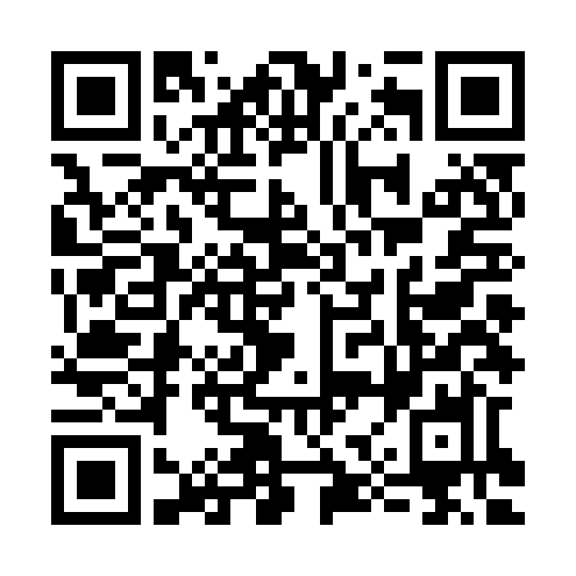
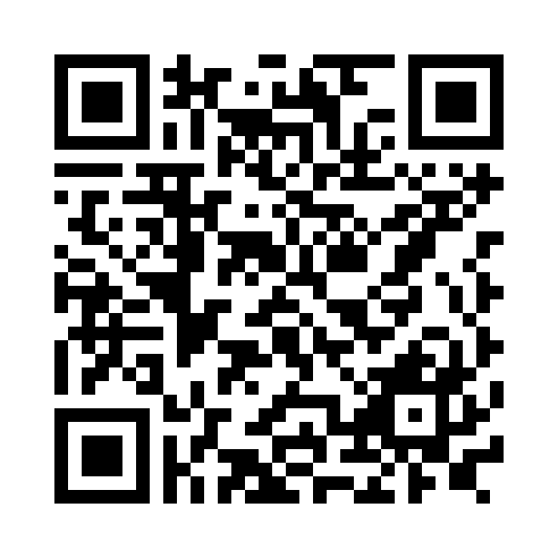

Google Drive 자료실·제출함
워크시트 사진, 생성 문장, 최종 파일을 저장하는 공간입니다.
2026 리본Re_Born학교 · AI 영상 만들기
나의 경험을 AI 영상으로 다시 표현하는 실습실
오늘의 목표
[실행목표] 워크시트에 나의 경험과 관심을 정리한 뒤,
퍼스널 비주얼카드로 톤앤무드 기준표를 만들고,
핵심문장과 5컷 스토리보드 초안을 정합니다.
강의 핵심 슬라이드
최신 PPT에서 워크시트, 퍼스널 비주얼카드, 60초 영상 구조와 바로 연결되는 슬라이드만 골랐습니다. 이미지를 누르면 다음 슬라이드로 넘어갑니다.
1회차 실습 흐름
복사해서 사용
워크시트에 적은 답을 대괄호 안에 넣고, ChatGPT 또는 Gemini에 붙여넣습니다.
도구 바로가기
QR·링크 안내
휴대폰으로 QR을 찍거나, 아래 버튼을 눌러 바로 열 수 있습니다. 수업용 안내문이 필요하면 DOCX 파일도 함께 확인합니다.

워크시트 사진, 생성 문장, 최종 파일을 저장하는 공간입니다.

나의 한 문장, 퍼스널 비주얼카드 키워드 3개, 선택미션 트랙을 공유합니다.
수강생에게 나눠줄 1장짜리 안내문입니다. QR이 잘 안 열릴 때를 대비해 주소도 함께 적혀 있습니다.
다음 주 준비
오늘 정한 톤앤무드 기준표와 5컷 스토리보드가 다음 시간의 이미지·영상 생성 재료가 됩니다.